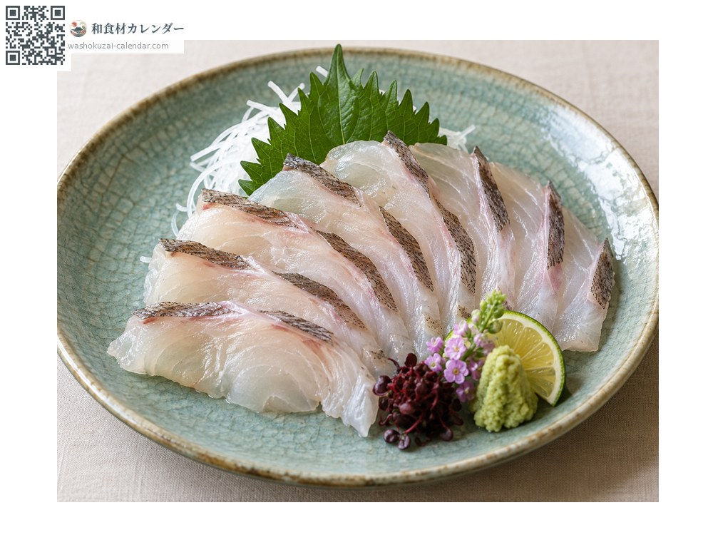
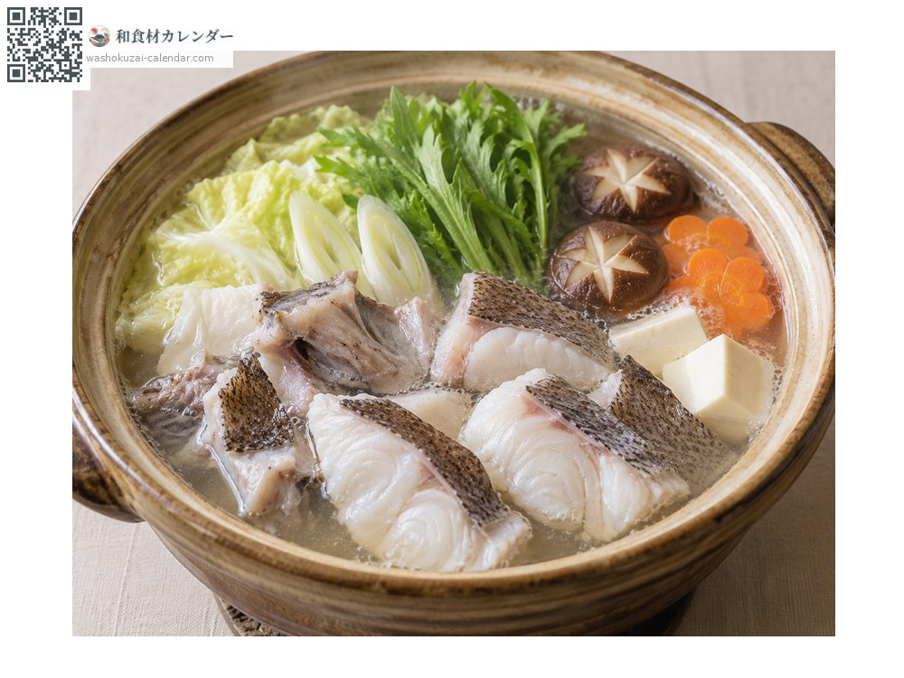
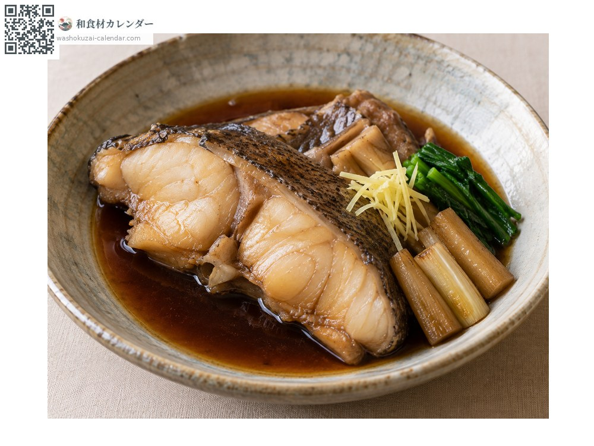
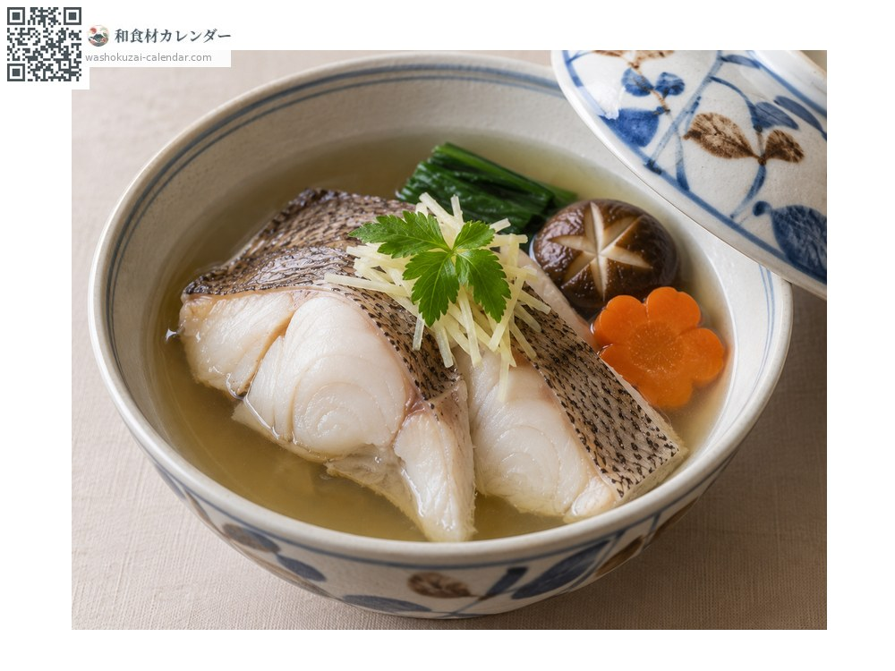

อาหารทะเล
ปลาเก๋าเจ็ดแถบ (มาฮาตะ)
マハタ まはた mahata
ชื่ออื่นmahata, hata
อร่อยที่สุดในเดือน มิ.ย., ก.ค., ส.ค.

ช่วงที่อร่อยที่สุด
ม.ค.
ก.พ.
มี.ค.
เม.ย.
พ.ค.
มิ.ย.
ก.ค.
ส.ค.
ก.ย.
ต.ค.
พ.ย.
ธ.ค.
ช่วงอร่อยที่สุดมีจำหน่าย
วิธีปรุง

ซาชิมิ
หั่นชิ้นแล่ให้บาง เนื้อมีความเด้ง ใต้หนังมีรสอูมามิ

หม้อไฟ
ใช้ชิ้นแล่รวมกับหัวและกระดูก ให้น้ำซุปที่เข้มข้น

ตุ๋นซีอิ๊วหวาน
ตุ๋นชิ้นแล่รสหวานเค็มจนเนื้อหลุดร่อน

นึ่งสาเก
นึ่งชิ้นแล่ด้วยสาเก รสของวัตถุดิบจะออกมาตรง ๆ
วิธีเลือก
ลำตัวสีเข้ม แถบขวางชัดเจน ชิ้นแล่เนื้อใสและหนังตึง
วิธีเก็บรักษา
เนื้อแน่นจึงเก็บได้ค่อนข้างนาน ชิ้นแล่ซับน้ำ ห่อฟิล์มแช่เย็น ใช้ภายใน 2-3 วัน
แหล่งผลิตหลัก
เกร็ดน่ารู้
มีแถบขวางเจ็ดเส้นบนลำตัว จึงเป็นที่มาของชื่อภาษาอังกฤษ ปลาเล็กแถบชัด พอโตขึ้นจะจางลง จัดเป็นปลาระดับสูงและมีการเพาะเลี้ยงด้วย
วัตถุดิบที่อร่อยที่สุดในช่วงเดียวกัน
 ปลาอาจิ (ปลาทูแขกญี่ปุ่น)
ปลาอาจิ (ปลาทูแขกญี่ปุ่น) ปลาชิมะอาจิ (ปลาสำลีแถบเหลือง)
ปลาชิมะอาจิ (ปลาสำลีแถบเหลือง) ปลาอิวาชิ (ปลาซาร์ดีนญี่ปุ่น)
ปลาอิวาชิ (ปลาซาร์ดีนญี่ปุ่น) ปลาโคฮาดะ (ปลาตะลุมพุกญี่ปุ่น)
ปลาโคฮาดะ (ปลาตะลุมพุกญี่ปุ่น) ปลาคัมปาจิ (ปลาหางเหลืองครีบยาว)
ปลาคัมปาจิ (ปลาหางเหลืองครีบยาว) ทูน่าครีบเหลือง
ทูน่าครีบเหลือง ปลาบิน
ปลาบิน ปลาอิชิได (ปลาจะละเม็ดลายขวาง)
ปลาอิชิได (ปลาจะละเม็ดลายขวาง)